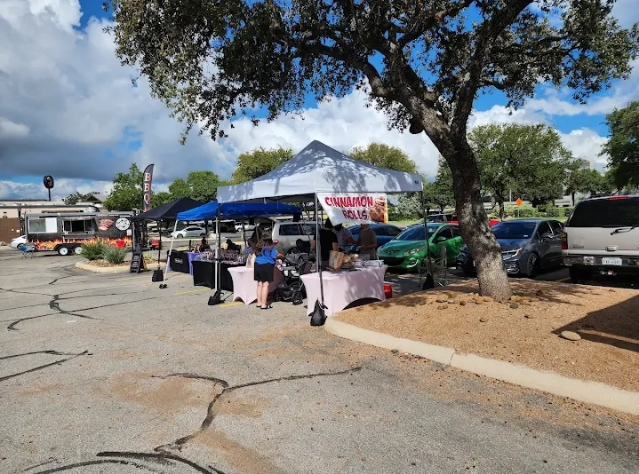

3
Years of Baking
Who We Are
A Passion for the Perfect Bake
The Loafy Dough was born in 2017 in a small home kitchen on Honey Lane. What started as weekend bakes for friends and family quickly grew into something bigger — a community gathering place where the smell of fresh bread and warm pastry fills every corner.
Locally Sourced Ingredients
We partner with local farms for eggs, dairy, and seasonal fruit — fresh every single morning.
Handcrafted Recipes
Our recipes are developed over years of refinement, honouring tradition while embracing creativity.
No Shortcuts, Ever
No preservatives, no artificial flavours. Just honest baking from our kitchen to your table.